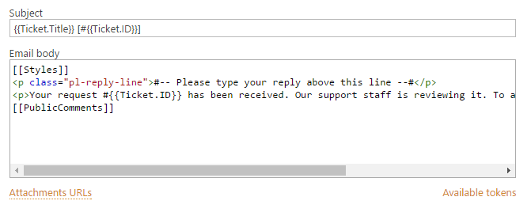

Tokens and snippets¶
Take a look at the sample template below. You are able to use custom tokens inside templates, we call them snippets and context tokens.

Snippets¶
Snippet is a small part of a template that will be inserted in the resulting message template. Current version doesn’t support snippet customization, but there is a list of built in snippets. Snippet is denoted by double square brackets.
- [[AllComments]]
- Renders a list of all comments for current ticket.
- [[PublicComments]]
- Renders a list of public comments for current ticket.
- [[Styles]]
- Sets the style of email message to the default HelpDesk style via CSS.
- [[TicketInfo]]
- Renders a summary for current tickets as a table.
Context Tokens¶
You can use context tokens to access HelpDesk entities like current list item, current ticket or current site URL.
Ticket token
You can use {{Ticket}} token to retrieve field values from the current
ticket. For example:
{{Ticket.FieldName}}
Where FieldName is the internal name of a field which you want to retrieve.
Some live examples:
{{Ticket.ID}}
{{Ticket.Title}}
You also can retrieve values from related lists via a lookup field:
{{Ticket.LookupFieldName.FieldName}}
Real world example:
{{Ticket.Requester.Title}} - Requester is a lookup field to the contacts list. Title is an internal field name.
There are additional extensions for the Ticket token:
{{Ticket.AllComments}} - returns a collection of list items for
comments. You can use #each (see advanced syntax) to iterate through
them.
{{Ticket.PublicComments}} - returns a collection of list items for
public comments only.
CurrentItem token
Email templates are used by notification workflows that process tickets
and comments. To retrieve current list item’s field values you can use
the {{CurrentItem}} token.
It supports the same logic as the {{Ticket}} token. There is only one
difference, it doesn’t have additional extensions like AllComments and
PublicComments.
Context token
You can use the {{Context}} token to get site related information:
{{Context.SiteUrl}}
{{Context.ServerUrl}}
Data token
{{Data}} is used when you specify custom template data in the Send email workflow action. You can access values from a custom template
like this:
{{Data.**PropertyName**}}
Advanced template syntax¶
There are some additional helper tokens.
The ‘Each’ token
If you need to display a block of text for each item in a collection, use the each token.
{{#!Ticket.AllComments.Body}}
{{#each Ticket.AllComments}}
<div>{{Body}}</div>
{{/each}}
Within the context of the each block, the scope changes to the current item. So, in the example above, Body refers to a property in the AllComments.
Take a look at {{#!Ticket.AllComments.Body}}. This expression begins
with #! and defines a property inside the collection which we want to
retrieve. Thus, we have to define all properties we will use before the
loop. In this example it is Body property.
Additionally, you can access the current index into the collection being enumerated using the index token.
{{#each Ticket.AllComments}}
<div>{{#index}}</div>
{{/each}}
The if token allows you to conditionally include a block of text.
{{#if Ticket.Requester}}
{{Ticket.Requester.Title}}
{{/if}}
The block will be printed if:
- The value is a non-empty string.
- The value is a non-empty collection.
- The value isn’t the NULL char.
- The value is a non-zero number.
- The value evaluates to true.
The if token has complimentary elif and else tokens. There
can be as many elif tokens as desired but the else token must appear
only once and after all other tokens.
{{#if Ticket.Requester}} Requester is not empty {{#elif
Ticket.AssignedTo}} AssignedTo is not empty {{#else}} Requester and
AssignedTo are empty {{/if}}